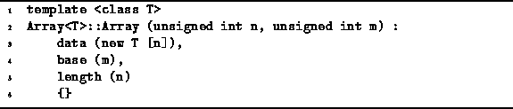
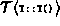
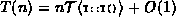
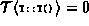

Data Structures and Algorithms
with Object-Oriented Design Patterns in C++
Data Structures and Algorithms
with Object-Oriented Design Patterns in C++ .
Given argument values m and n, the constructor first allocates
an array of n elements of type T using operator new,
and then sets the length field to n
and the base field to m.
The running time is a constant plus the time do the array allocation.
.
Given argument values m and n, the constructor first allocates
an array of n elements of type T using operator new,
and then sets the length field to n
and the base field to m.
The running time is a constant plus the time do the array allocation.

Program: Array<T> Class Constructor Definition
In C++, when an array is allocated, two things happen. First, memory is allocated for the array from the free store , known as the heap . Second, each element of the array is initialized by calling its default constructor.
For now, we shall assume that the first step in the dynamic allocation--the allocation of space in the heap--takes a constant amount of time.
In fact, when we look at how the heap is implemented
we will see that this assumption is does not always hold
(see Chapter ).
Suppose that the running time of the default constructor for
objects of type T is given by .
Then, the time to initialize an array
of size n is .
There is a special case to consider: The behavior of the default constructor for the C++ built-in types (int, char, ..., and pointers thereto) is to do nothing! So, if T is a built-in type, . In this case, the running time for the Array<T> constructor is simply T(n)=O(1), regardless of the value n.
 Copyright © 1997 by Bruno R. Preiss, P.Eng. All rights reserved.
Copyright © 1997 by Bruno R. Preiss, P.Eng. All rights reserved.